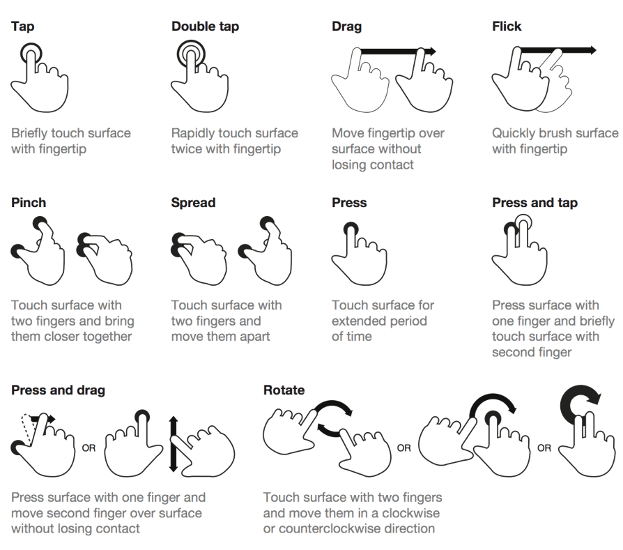

Week 3 Event-Driven Programming
Cross Platform Application Development
Creating controls in C#
XAML creates objects
When we write:
objects of those classes are being created.
The Label is a Label object.
The Entry is an Entry object.
They become part of the UI object tree for our MainPage.
Working with those objects from C#
Because these objects are part of our MainPage UI, our C# code can work with them.
We could search through the UI object tree at runtime to find a particular object.
But that would be cumbersome.
We need an easier way to refer to important controls.
Those controls are objects belonging to the MainPage class, so we need a reference to those objects
x:Name
x:Name gives a XAML-created object a name that we can use from code.
Now the code-behind can refer to it:
MainPage.xaml MainPage.xaml.cs
┌───────────────────────────────┐ ┌───────────────────────────────┐
│ <Label │ │ GreetingLabel │
│ x:Name="GreetingLabel" │ ──x:Name──────►│ .Text = "Hello, world!"; │
│ Text="Hello!" /> │ │ (the same object) │
└───────────────────────────────┘ └───────────────────────────────┘Behind the scenes, x:Name is roughly equivalent to declaring a field at the top of the partial class:
You never write this yourself. When InitializeComponent() runs, it creates the Label from the XAML and assigns it to a field with exactly this name - that’s the “same object” in the diagram above.
XAML creates the object. x:Name gives us a reference to it.
Creating a Label in C#
We don’t have to use XAML.
The same type of object can be created directly in C#:
We can then add it to a layout:
<VerticalStackLayout
x:Name="MainVerticalLayout">
<!--
-->
</VerticalStackLayout>XAML or C#?
We can configure a Label in XAML:
or in C#:
So why use XAML?
XAML is particularly good at describing:
- hierarchy, layout, properties, the static structure of the UI
C# is particularly useful for:
- application logic, calculations, interaction, dynamic UI
Dynamic UI
Because controls are objects, we can create them dynamically.
The application creates five separate Label objects.
This is useful when the UI depends on runtime information.
Event Driven Programming
Event-Driven Programming
This week we will look at how our application responds to things happening while it is running.
We will look at:
- Events and event handlers
- Button clicks and text input
- Runtime changes to the UI
- Input validation and data integrity
- Properties for protecting data
- Timers
- Lambda and anonymous functions
- Gestures
From Static UI to Dynamic Application
Last week we created our user interface using XAML.
For example:
This describes the initial structure of the page.
However, an application should not remain exactly as it was when it started.
While the application is running, we can change the UI using C#.
We can also create new objects and add them to layouts.
Compile Time and Run Time
There are two useful ideas to distinguish.
Compile time is when our source code is processed before the application runs.
Run time is when the application is actually running and responding to the user.
XAML gives us a convenient way to define the initial structure of our UI before the application runs.
C# can then modify that UI while the application is running.
Compile Time vs Run Time
The initial UI can be thought of as the starting point:
Once the application is running, C# can make changes:
The UI does not have to remain exactly as it was defined in XAML.
Runtime Changes
For example, the following changes an existing Label:
We can also change other properties:
Or create new controls:
If we can do something in XAML, we can often do the equivalent in C# at runtime.
But What Makes the Code Run?
We could write:
But when should this code execute?
We don’t want it to execute immediately when the application starts.
Perhaps it should execute when the user presses a button.
This leads us to event-driven programming.
What Is Event-Driven Programming?
Event-driven programming is a programming model where the flow of the program is determined by events.
An event is something that happens while the application is running.
Examples include:
- A button is clicked
- The user types something
- A timer reaches its interval
- A finger touches the screen
- The user swipes
- A page finishes appearing
Instead of deciding exactly when everything happens, our application waits for events and responds to the ones we are interested in.
Events Are Happening All the Time
Everything the user does can potentially generate events.
For example:
- Moving the mouse
- Clicking or tapping
- Typing on the keyboard
- Pressing a button
- Swiping
- Pinching
- Changing the device orientation
The application does not need to respond to all of these.
We subscribe to the events that we care about.
The Event-Driven Model
A typical event-driven application has:
Event source
Something that generates an event.
Examples: Button, Entry, Timer, Gesture recogniser
Event
Something that happened.
Examples: Clicked, TextChanged, Tick, Tapped
Event handler
The method that runs when the event occurs.
Subscribing to an Event
Consider:
The Clicked event belongs to the Button.
The += means that we are subscribing to the event.
We are saying:
When this button is clicked, call
OnButtonClicked.
The method is not called when this line executes.
It is called later, when the event actually occurs.
Unsubscribing from an event
When we subscribe to an event using +=, we can also unsubscribe using -=.
If we subscribe as on the previous slide, we can later remove that subscription:
Why += and not just =
You might wonder why we write:
The important difference is that Clicked is an event, not a normal property.
An event can have multiple methods subscribed to it.
For example:
When the button is clicked, both methods can be called.
Example
I mentioned earlier, moving the mouse is an event.
It should be obvious that multiple things may want to track the mouse movement.
So multiple methods may need to be subscribed to the mouse movement event.
A Button Click
In XAML we can connect a Button to an event handler.
This is XAML syntax for connecting an event to a handler. It isn’t the same as assigning a value to a normal property.
The method is written in the code-behind:
When the user clicks the button:
Event Handlers
An event handler is a method that is called when an event occurs.
A typical handler looks like:
The exact type of the event arguments depends on the event.
For a simple Button click, there is no additional information required, so we use:
Other events can provide more information.
The sender Parameter
What is sender?
It is the object that raised the event.
For example, if a Button is clicked:
sender refers to the Button that was clicked.
Although its declared type is object, the actual object can be a Button, Entry, Timer, or another object that raised the event.
Working with sender
If we know that the sender is a Button, we can access its Button properties by casting the object to type button (just like )
The cast:
tells C#:
Treat this object as a Button.
One Handler, Multiple Buttons
The same event handler can be used by multiple controls.
The handler can determine which Button raised the event.
This is often safer than assuming that sender is always a particular type.
object and Pattern Matching
Remember that object is a general C# type.
An object can refer to an instance of many different classes.
We can check its actual type using pattern matching:
This means:
If
senderis a Button, create a variable calledbuttonreferring to it.
We can use the same idea with other controls.
Event Arguments
The second parameter contains information about the event.
For a Button click:
does not contain much additional information.
Other events provide more specialised information.
For example:
The SwipedEventArgs object tells us information about the swipe.
Creating Event Handlers in Visual Studio
Visual Studio can create an appropriate event handler for us.
In XAML, start typing:
Visual Studio will offer:
<New Event Handler>
Selecting this creates a suitable method in the code-behind.
For example:
This is useful because Visual Studio knows which event we are handling and can provide the appropriate event argument type.
Button Events
A button has three events that can occur
Pressed: Fired immediately when a finger or mouse pointer presses down on the button.Released: Fired when the finger or mouse button is lifted, regardless of whether it moved off the button.Clicked: Fired only when a press is completed and released while the pointer remains on the button’s surface. If the user slides their finger away before releasing, Released fires, but Clicked does not.
Even if we are not subscribing to them, the events still happen. But we only subscribe to the ones we wish to react to.
e.g. Maybe we want to change how the button looks when Pressed happens.
Entry Events
Buttons are not the only controls that raise events.
An Entry has events that allow us to react to text input.
Two useful examples are:
TextChangedCompleted
TextChanged occurs when the text changes.
Completed occurs when the user finishes entering the text, such as pressing Enter on the keyboard.
More Events
There are many more.
The important skill is not memorising every event.
It is knowing that a control provides events and knowing how to find and handle the ones you need.
Remember, Visual Studio Intellisense will remind you in the editor of different possible events when typing in the control.
The TextChanged Event
For example:
The handler can examine the new text:
The event arguments contain useful information about what changed.
For example:
Why Validate Input?
A user can enter unexpected data.
For example, suppose we want a quantity:
What happens if the user enters:
and we try:
The conversion can fail and the application can crash.
We should never assume that data entered by a user is valid.
Never Trust Input
A useful rule in software development is:
Never trust data from the client.
Even if you wrote the application, the user can still enter unexpected data.
Input validation protects the application from:
- Empty input
- Incorrect formats
- Values outside an allowed range
- Unexpected characters
- Data that cannot be converted to the required type

Checking for Empty Input
We can check whether an Entry contains text.
return exits the method.
If the input is invalid, the rest of the calculation is not performed.
IsNullOrEmpty vs IsNullOrWhiteSpace
C# provides:
This checks whether the string is null or has zero characters.
There is also:
This also considers a string containing only spaces to be empty for validation purposes.
For user input, IsNullOrWhiteSpace is often the more useful check.
Checking for a Number
We can use TryParse to safely attempt a conversion.
TryParse returns:
trueif the conversion succeedsfalseif the conversion fails
If it succeeds, the converted value is placed into quantity.
What Does out Mean?
There is something new in the TryParse example:
The out keyword means that the method can put a value into the variable. (double is declaring quantity as type double)
Think of it as giving the method a variable to fill in, for example:
If the conversion succeeds, TryParse puts the converted number into quantity.
If the conversion fails, TryParse returns false and quantity is assigned 0.
The important point is that TryParse gives us two pieces of information:
trueorfalse— did the conversion succeed?quantity— what was the converted value?
Note
out is used when a method needs to return a value through a parameter, in addition to its normal return value.
Handling Invalid Numbers
Putting this into our button event:
The application does not crash when the user enters something such as:
Instead, we handle the error ourselves.
Keyboard Types Are Not Validation
We can suggest an appropriate keyboard in XAML:
This is useful because it gives the user a more appropriate keyboard.
However, it does not guarantee that the value is a valid number.
The application still needs to validate the input.
Verifying String Structure
Sometimes we need to check more than whether a string is empty.
For example, suppose we expect:
We may need to check:
- The string is not empty
- It has the correct length
- It contains the expected characters
- It follows the required structure
Validation should happen before we use the data.
The exact validation technique depends on the structure we need to verify.
Properties Can Protect Data
Validation does not always have to happen in the UI.
Suppose we have a class representing a person.
We might want to prevent an invalid age from being stored.
The property controls how the field can be changed.
Why Validate in a Property?
Imagine that several different parts of our application can change Age.
If we only validate the Entry:
another part of the program could potentially bypass that validation.
A property can protect the data itself:
This helps maintain the integrity of our application’s data.
Events and Data Integrity
These ideas work together.
For example:
Event-driven programming gives us the opportunity to respond when the user provides or changes data.
Finding Available Events
Visual Studio’s IntelliSense can help us find available events.
Documentation can also be used.
For example, the .NET MAUI Entry documentation lists the events and properties available for the control.
The same approach can be used for other MAUI controls.
Timer Events
Events do not have to come directly from the user.
A timer can also generate events.
A timer allows us to run code at regular intervals.
For example:
This is useful for things such as:
- Games, Clocks, Counters, Periodic UI updates, Checking conditions
DispatcherTimer
For UI work in .NET MAUI, we can use the application’s dispatcher to create a timer.
The timer will raise its Tick event every second.
Note
The ? is there as it only tries to run the method if the timer field is not null.
If the field is null and you don’t have that ?, you get a runtime error.
It’s a useful check and Visual Studio will often give you a warning about it.
Handling the Timer Event
We can handle the Tick event just like other events.
The important thing to notice is that the timer is simply another event source.
Starting and Stopping a Timer
A timer can be started and stopped. You can probably guess how to stop:
For example:
Caution
Stop() on its own does not destroy the timer. You can call Start() later to use the same timer again.
However, Stop() is not a pause.
For example, if the timer has a 10-second interval and you stop it after 4 seconds, calling Start() again does not continue from the remaining 6 seconds. The timer starts its interval again.
Dispose Timer
When you are finished with a timer, you may want to free up some memory and Dispose of the timer
Dispose() releases resources used by the timer. Once a timer has been disposed, you should not use that timer again. If you need a timer later, create a new one.
Dispose()releases the resources used by the timer.- The garbage collector can reclaim the timer object later when there are no remaining references to it.
- Setting the field to
nullremoves this reference to the timer object.
You can reuse the _timer field later by creating a new timer if you wish.
Anonymous Functions
We have written a separate method for every event:
with:
But sometimes an event handler is very small and is only used once.
C# allows us to write the function directly where we subscribe to the event.
This is an anonymous function.
Lambda Expressions
In C#, anonymous functions are commonly written using lambda expressions.
A basic lambda looks like:
or:
For example:
There is no separate method called OnButtonClicked.
Lambda Expression Example
Instead of:
we could write:
The event still works in exactly the same way.
The only difference is where the event-handling code is written.
When Are Lambdas Useful?
Lambdas are particularly useful when:
- The handler is very short
- The handler is only needed once
- The code makes sense directly beside the event subscription
For a larger event handler, a named method is often easier to read.
There is no requirement to use a lambda just because one is possible.
Gestures
Buttons and Entries are not the only way users interact with a mobile application.
Users are familiar with gestures such as:

A MAUI application can recognise these gestures using gesture recognisers.
Gesture Recognisers
.NET MAUI provides gesture recognisers that allow controls to respond to touch gestures.
Some examples are:
TapGestureRecognizerSwipeGestureRecognizerPanGestureRecognizerPinchGestureRecognizer
The recogniser detects the gesture and raises an event.
Our application can then subscribe to that event.
Tap Gesture
A tap gesture can be added to a control in XAML.
For example:
When the image is tapped:
Handling a Tap
The event handler can be written like any other event handler.
Notice that this event uses:
rather than the generic:
The specialised event arguments can contain additional information about the gesture.
Adding a Gesture at Runtime
We can also create the gesture recogniser using C#.
This is another example of the relationship between XAML and runtime C#.
The XAML version defines the initial UI.
The C# version can create and attach the same type of functionality while the application is running.
Properties of a Gesture
TapGestureRecognizer has properties such as NumberOfTapsRequired and Buttons.
NumberOfTapsRequired
Pretty obvious what this does!
The event will only be raised when the user taps this number of times.
- Default is
1 - On some devices, taps greater than
2are ignored
Buttons
This is particularly useful on desktop, where we can distinguish between mouse buttons.
We can respond to:
Primary— normally the left mouse buttonSecondary— normally the right mouse buttonBoth— either button
TappedEventArgs e
The e parameter contains information about what happened.
Typing e. in Visual Studio and waiting for IntelliSense will show the properties and methods available.
e.Buttonscan tell us which mouse button was usede.GetPosition(...)can tell us where the tap occurred
void OnTapGestureRecognizerTapped(object sender, TappedEventArgs e)
{
// Position inside the window
Point? windowPosition = e.GetPosition(null);
// Position relative to an Image
Point? relativeToImagePosition = e.GetPosition(image);
// Position relative to the container view
Point? relativeToContainerPosition = e.GetPosition((View)sender);
}The argument to GetPosition() determines what the position is relative to.
Swipe Gestures
A swipe recogniser can detect the direction of a swipe.
The event handler can inspect the direction:
Several Swipe Directions
We can configure multiple recognisers if we want to respond to different directions.
<BoxView Color="Red"
HeightRequest="200"
WidthRequest="200">
<BoxView.GestureRecognizers>
<SwipeGestureRecognizer Swiped="OnSwipeGesture"
Direction="Left" />
<SwipeGestureRecognizer Swiped="OnSwipeGesture"
Direction="Right" />
<SwipeGestureRecognizer Swiped="OnSwipeGesture"
Direction="Up" />
<SwipeGestureRecognizer Swiped="OnSwipeGesture"
Direction="Down" />
</BoxView.GestureRecognizers>
</BoxView>All four can use the same event handler.
The event arguments tell us which direction was detected.
Other Gestures
The same basic idea applies to other gestures.
Tap
Detects a tap on a control.
Swipe
Detects a swipe in a particular direction.
Pan
Detects movement across the screen.
Pinch
Detects a pinch gesture, commonly used for zooming.
The Same Pattern Everywhere
We have now seen many different event sources:
The details differ, but the underlying model is the same.
Event-Driven Programming in MAUI
.NET MAUI applications are largely event-driven.
The application starts and waits for things to happen.
The programmer does not decide exactly when the user will click, type, swipe or tap.
We write the code that should respond when those events occur.
Putting It All Together
Consider a simple application with:
- An Entry for a quantity
- A Button to calculate
- A Label for the result
- A timer updating the screen
The application is constantly waiting for events.
Each event can cause a different piece of C# code to run.
The Big Picture
The important idea from this week is not memorising every event.
It is understanding the pattern:
This is the basic model behind much of the interaction in a .NET MAUI application.
Summary
- .NET MAUI applications are event-driven.
- Controls and other objects can raise events.
- We subscribe to events using
+=, unsubscribe using-=. - Event handlers contain the code that responds to events.
senderidentifies the object that raised the event.EventArgsand specialised event argument types provide information about the event.- User input should always be validated.
- Properties can help protect the integrity of application data.
- Timers are another source of events.
- Gesture recognisers allow applications to respond to touch gestures.
- Lambda expressions allow small event handlers to be written directly where they are subscribed.